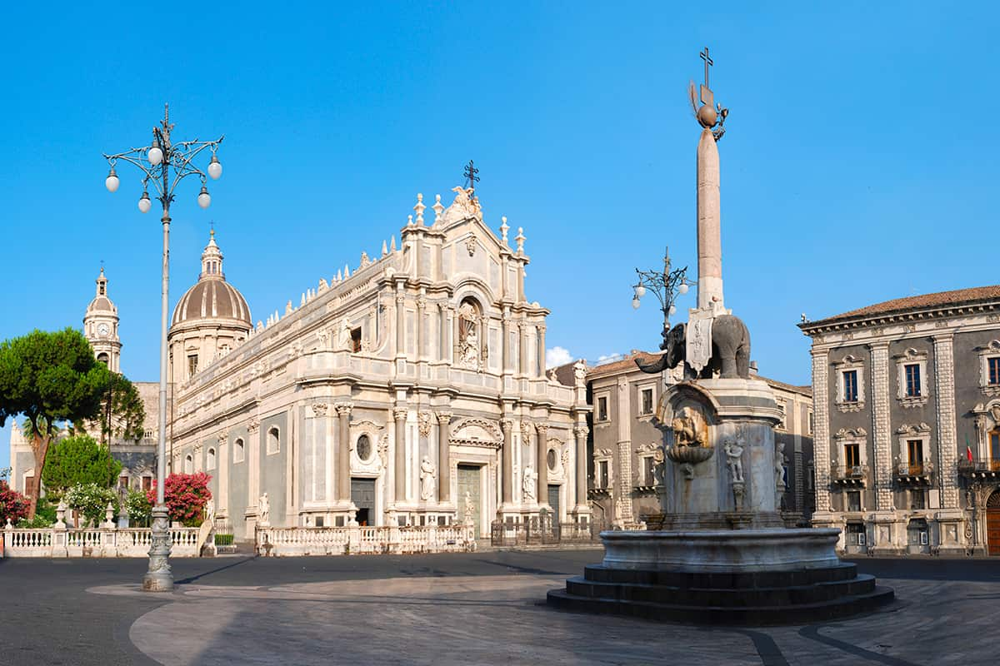
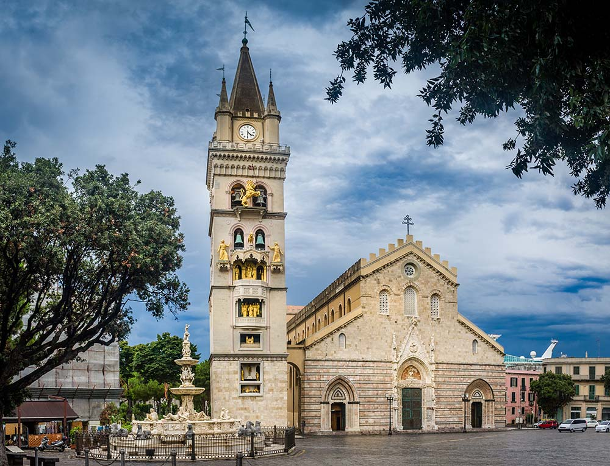
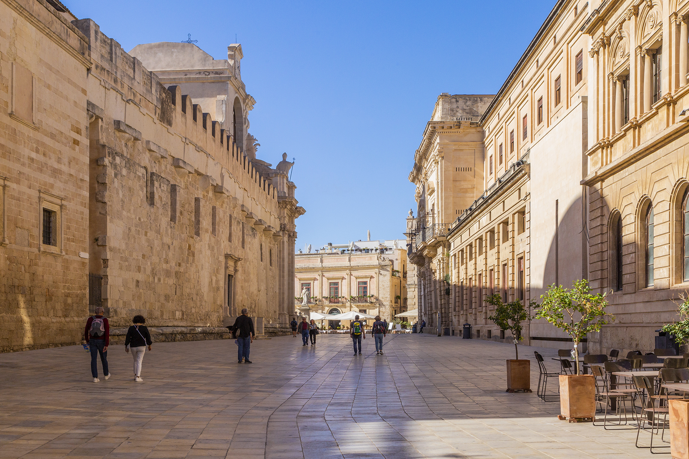
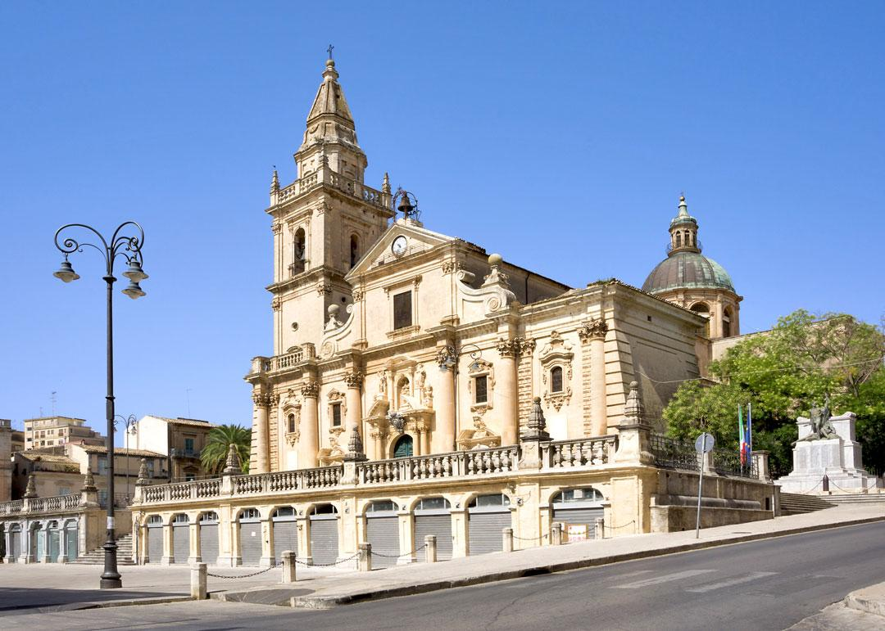

PALERMO - PIAZZA PRETORIA
È una piazza centrale nel tessuto storico della città, sede del Municipio e collegata ai principali assi urbani. Rappresenta un nodo civico e simbolico della vita pubblica palermitana.

Il presente sito presenta una selezione di piazze dei capoluoghi di provincia siciliani, con l’obiettivo di offrire un archivio informativo chiaro e organizzato. Ciascuna piazza è stata scelta per il suo ruolo centrale nella vita urbana e viene descritta attraverso elementi significativi quali funzione, storia, architettura e relazione con la città. Le schede consentono di consultare e confrontare le piazze, evidenziandone l’importanza nei rispettivi contesti urbani.
È una piazza centrale nel tessuto storico della città, sede del Municipio e collegata ai principali assi urbani. Rappresenta un nodo civico e simbolico della vita pubblica palermitana.

Costituisce il cuore monumentale e urbano della città. Riunisce funzioni religiose, civiche e turistiche ed è uno spazio di incontro e rappresentazione collettiva.

È il principale spazio pubblico della città, legato alla Cattedrale e al campanile astronomico. Ha un forte valore identitario e storico per la comunità messinese.

Piazza centrale dell’isola di Ortigia, con una forte comunità tra spazio urbano e architettura storica. È rappresentativa del rapporto tra piazza, monumento e città antica.

Situata nel centro di Ragusa superiore, è uno spazio urbano riconoscibile che svolge una funzione civica e religiosa, con una forte presenza monumentale.

È uno spazio ampio e strutturato che connette il centro storico alla città moderna. Svolge una funzione di rappresentanza urbana e di snodo tra diverse parti della città.

Affacciata sulla Valle dei Templi, è una piazza simbolica che rappresenta il rapporto tra la città contemporanea e il patrimonio archeologico.

È il principale spazio pubblico della città, luogo di incontro e di eventi, con funzione centrale nella vita sociale ennese.

È il cuore civico della città, sede della Cattedrale e di edifici istituzionali, rappresentando il punto di riferimento urbano principale.